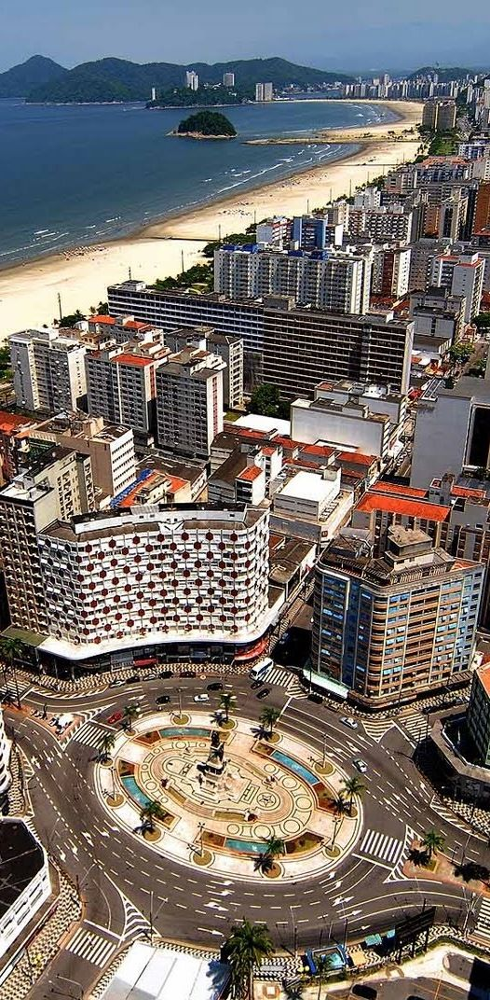

As praias de Santos
Por Jarbas Favoretto*
Sacramentado pelo Livro dos Records, o maior jardim frontal de praia do mundo está em Santos, acompanhando seis praias em sete quilômetros de extensão. O jardim tem 77 espécies de flores e mais de 1.700 árvores sempre bem tratadas pela prefeitura. Entre a Praia do José Menino, que faz divisa com São Vicente, e a Ponta da Praia, de onde se aprecia a entrada
e saída de navios, estão Praia do Gonzaga, Praia do Boqueirão, Praia do Embaré e Praia de Aparecida. Todas possuem mar tranquilo e areias macias. Nas praias há mais de 200 barracas de clubes e entidades. São propícias para a prática de vários esportes e tornou-se a capital nacional do Triathlon. Enfim, algo a ser curtido por você.
E mais praias e passeios
Por Jarbas Favoretto*
Da Ponta da Praia até a Ilha Urubuqueçaba, que marca a divisa entre São Vicente e Santos, nós temos 8 km de praias limpas e iluminadas, com o maior jardim de praia de todo o mundo com suas flores de vários tons. É um bom espetáculo para os olhos durante o dia ou à noite. Ao longo dessas praias você encontra outros atrativos como o Aquário Municipal, o Cine Arte, a
Concha Acústica, a Feira de Artesanato, o Museu do Mar, o Museu da Pesca, o Orquidário. Santos é facilmente alcançada por ônibus que saem do Terminal Jabaquara, na Capital, a cada 10 minutos. Tão perto que nem dá tempo para a gente cochilar. (E não se esqueça de provar os insuperáveis pastéis do Bar do Carioca, ao lado da Prefeitura!)